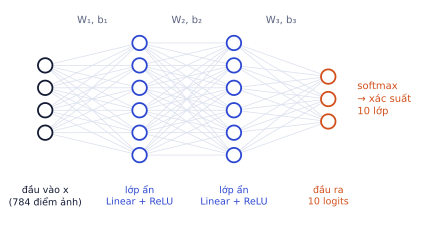
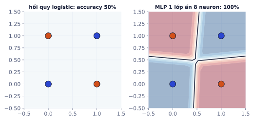
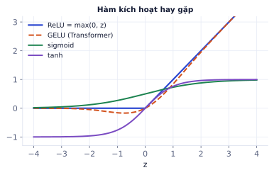
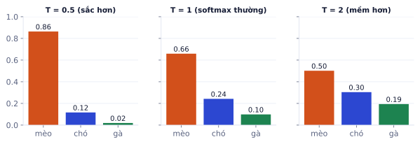
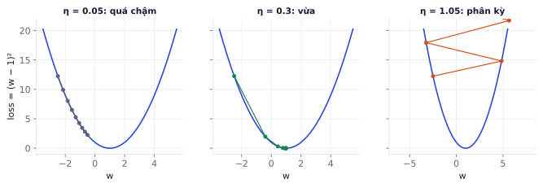
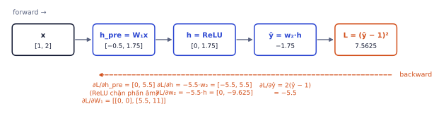

Bài 1
Hai bước gradient descent
tính tayf(w) = w², bắt đầu từ w = 3, learning rate 0.25.
Lời giải
f′(w) = 2w. Bước 1: 3 − 0.25·6 = 1.5. Bước 2: 1.5 − 0.25·3 = 0.75. Mỗi bước w giảm một nửa: với hàm bậc hai, w nhân với (1 − 2η) sau mỗi bước.
Bài nền tảng nhất của lộ trình: mạng nơ-ron học thế nào, từ một neuron tới vòng lặp train trong PyTorch. Trang lý thuyết tương tác đầy đủ (có demo kéo-thả, 7 bài tính tay và bài kiểm tra 8 câu) nằm ở nút Vào bài học phía trên. Trang này giải thích chi tiết từng ý, có ví dụ tính tay đầy đủ, bộ bài tập mới để tự kiểm tra, và hướng dẫn phần thực hành.
Trang lý thuyết tương tác, bài tính tay và bài kiểm tra cuối bài.
Hồi quy logistic chỉ kẻ được một đường thẳng. Phần lớn bài toán thật (nhận ảnh, hiểu câu) cần ranh giới cong và phức tạp hơn rất nhiều. Mạng nơ-ron giải quyết điều đó bằng một ý tưởng đơn giản: xếp chồng nhiều lớp "logistic", xen giữa là một phép phi tuyến.
h₁ = ReLU(W₁ x + b₁)
h₂ = ReLU(W₂ h₁ + b₂)
logits = W₃ h₂ + b₃ lớp cuối không có ReLU
p = softmax(logits)

Bốn điểm (0, 0), (1, 1) thuộc lớp 0; (0, 1), (1, 0) thuộc lớp 1. Không có đường thẳng nào tách được chúng, nên hồi quy logistic chỉ đúng 50%. Một MLP với một lớp ẩn 8 neuron đạt 100% sau vài trăm bước train.

Lớp ẩn học ra các đặc trưng mới từ đặc trưng gốc (ví dụ "x₁ và x₂ khác nhau"), rồi lớp cuối chỉ cần kẻ đường thẳng trên các đặc trưng mới đó. Mạng sâu lặp lại điều này nhiều lần: lớp đầu của mạng nhận ảnh học cạnh và góc, lớp giữa học hoa văn, lớp sau học bộ phận (mắt, bánh xe).
Mọi model deep learning, từ mạng 2 lớp tới LLM trăm tỉ tham số, đều train bằng cùng một vòng lặp. Nắm chắc nó thì đọc code train nào cũng thấy quen.
Mạng nơ-ron là một hàm f(x; θ) với rất nhiều tham số θ. Train là lặp lại bốn việc:
| Bước | Làm gì | Trong PyTorch |
|---|---|---|
| Forward | đưa batch qua mạng, tính dự đoán | logits = model(x) |
| Loss | so dự đoán với đáp án | loss = F.cross_entropy(logits, y) |
| Backward | tính gradient của loss theo mọi tham số | loss.backward() |
| Cập nhật | dịch tham số ngược hướng gradient | opt.step() |
Thêm opt.zero_grad() ở đầu mỗi bước (lý do ở mục backprop).
CIFAR-10 có 50.000 ảnh train, batch 128: mỗi epoch có ⌈50.000 / 128⌉ = 391 iteration (batch cuối chỉ có 80 ảnh). Train 20 epoch là 391 × 20 = 7.820 lần cập nhật.
Mạng nơ-ron chỉ làm việc với tensor số thực. Biết chính xác ảnh, nhãn, batch được xếp thành shape nào giúp bạn đọc mọi lỗi "shape mismatch" và viết được model của riêng mình.
Tensor là mảng nhiều chiều, giống mảng numpy (P0.2) nhưng chạy được trên GPU và tự tính gradient. Cách dùng tensor, autograd và nn.Module đã luyện ở P0.6; bài này đi vào vì sao mạng học được.
| Dữ liệu | Shape thường gặp |
|---|---|
| Một batch ảnh màu | [N, C, H, W]: số ảnh, kênh màu (3), cao, rộng |
| Một batch ảnh CIFAR-10 | [128, 3, 32, 32] |
| Nhãn phân loại | [N], mỗi phần tử là chỉ số lớp 0..9, kiểu long |
| Đầu ra lớp cuối | [N, 10]: 10 logits cho mỗi ảnh |
| Một batch câu (P3) | [N, T] chỉ số token, rồi [N, T, d] sau embedding |
import torch
x = torch.randn(128, 3, 32, 32) # batch ảnh giả
x.shape, x.dtype, x.device # torch.Size([128, 3, 32, 32]) torch.float32 cpu
device = "cuda" if torch.cuda.is_available() else "cpu"
x = x.to(device) # chuyển lên GPU nếu có (model cũng phải ở cùng thiết bị)
x.flatten(1).shape # [128, 3072]: duỗi mỗi ảnh thành vector cho MLP
(torch.Size([128, 3, 32, 32]), torch.float32, device(type='cpu')) torch.Size([128, 3072])
Ảnh gốc có giá trị 0–255. Trước khi đưa vào model: chia 255 để về [0, 1], rồi chuẩn hóa theo từng kênh: (x − mean) / std, với mean và std tính trên tập train.
Với CIFAR-10, mean kênh đỏ là 0.4914 và std là 0.2470. Một điểm ảnh đỏ có giá trị 200:
Sau chuẩn hóa, mỗi kênh có trung bình 0, độ lệch chuẩn 1 trên tập train: mọi đầu vào cùng thang đo, gradient descent đi thẳng hơn (giống lý do chuẩn hóa ở P1.1).
Quên chuẩn hóa ở lúc dự đoán. Model train trên ảnh đã chuẩn hóa mà khi chạy thật lại nhận ảnh 0–255 sẽ cho kết quả vô nghĩa, không báo lỗi gì. Đóng gói phép chuẩn hóa cùng model (trong transforms hoặc trong hàm predict) để không bao giờ quên.
Lớp Linear là nơi chứa gần như mọi tham số của mạng. Hàm kích hoạt là thứ biến chồng lớp Linear thành một model mạnh. Thiếu nó, mạng sâu đến đâu cũng chỉ là hồi quy tuyến tính.
nn.Linear(in, out) tính y = x Wᵀ + b, W shape (out, in), b shape (out). Số tham số = in × out + out.
MLP cho ảnh CIFAR-10 duỗi phẳng: 3 × 32 × 32 = 3.072 đầu vào → 256 → 10.
import torch.nn as nn
model = nn.Sequential(nn.Flatten(), nn.Linear(3072, 256), nn.ReLU(), nn.Linear(256, 10))
sum(p.numel() for p in model.parameters()) # 789258
789258
Hai lớp Linear liền nhau: W₂(W₁x + b₁) + b₂ = (W₂W₁)x + (W₂b₁ + b₂). Đó vẫn là một lớp Linear. Chồng 100 lớp Linear cũng không mạnh hơn một lớp. Hàm kích hoạt phi tuyến ở giữa phá vỡ điều đó.

| Hàm | Công thức | Đạo hàm | Dùng ở đâu |
|---|---|---|---|
| ReLU | max(0, z) | 1 nếu z > 0, 0 nếu z < 0 | mặc định cho lớp ẩn |
| GELU | z · Φ(z) | mượt quanh 0 | Transformer, ViT |
| sigmoid | 1/(1 + e⁻ᶻ) | σ(1 − σ), tối đa 0.25 | đầu ra nhị phân, cổng trong LSTM |
| tanh | (eᶻ − e⁻ᶻ)/(eᶻ + e⁻ᶻ) | 1 − tanh², tối đa 1 | RNN cũ |
Sigmoid có đạo hàm tối đa 0.25. Qua 10 lớp sigmoid, gradient có thể bị nhân với 0.25¹⁰ ≈ 10⁻⁶: lớp đầu gần như không học được (vanishing gradient). ReLU có đạo hàm đúng bằng 1 ở phần dương nên tránh được vấn đề này, là lý do chính khiến mạng sâu train được từ khoảng 2012.
"ReLU chết". Nếu một neuron có z < 0 với mọi mẫu (thường do learning rate quá lớn đẩy bias về rất âm), gradient của nó luôn bằng 0 và nó không bao giờ học lại. Dấu hiệu: nhiều neuron có đầu ra luôn bằng 0. Giảm learning rate, hoặc dùng LeakyReLU/GELU.
Lớp cuối của mọi mạng phân loại (từ CNN nhận ảnh tới LLM đoán token tiếp theo) đều là softmax + cross-entropy. LLM thực chất là một bộ phân loại khổng lồ với hàng chục nghìn lớp (mỗi token là một lớp).
pᵢ = e^(zᵢ) / Σⱼ e^(zⱼ)
Lũy thừa làm mọi số dương; chia tổng làm tổng bằng 1. Logit lớn hơn 1 đơn vị thì xác suất lớn hơn gấp e ≈ 2.72 lần.
Logits cho ba lớp (mèo, chó, gà): z = (2, 1, 0.1).
Nếu đáp án là mèo: loss = −log 0.659 ≈ 0.417. Nếu đáp án là gà: loss = −log 0.099 ≈ 2.32.
Chia logits cho T trước softmax: T < 1 làm phân phối sắc hơn (tự tin hơn), T > 1 làm mềm hơn. Đây chính là tham số temperature khi gọi LLM (P3, P4): temperature thấp cho câu trả lời ổn định, cao cho câu trả lời đa dạng.

loss = −log p_(lớp đúng)
Model đoán đều cho 10 lớp (pᵢ = 0.1) có loss = ln 10 ≈ 2.303. Đây là con số bạn nên thấy ở bước train đầu tiên của bài phân loại 10 lớp; nếu loss ban đầu khác xa, có thể khởi tạo hoặc nhãn có vấn đề.
Gradient của cross-entropy theo logits rất gọn: ∂loss/∂zᵢ = pᵢ − [i là lớp đúng], "dự đoán trừ đáp án", y như hồi quy logistic ở P1.1.
Cho softmax vào trước F.cross_entropy. Hàm F.cross_entropy (và nn.CrossEntropyLoss) đã gồm sẵn log-softmax bên trong, nhận logits thô. Thêm softmax vào cuối model thì softmax bị áp hai lần: model vẫn train nhưng chậm và kém hơn. Nhãn truyền vào là chỉ số lớp kiểu long, không phải one-hot.
Logits (0, 0, 0, 0) cho 4 lớp.
Learning rate là siêu tham số quan trọng nhất khi train mạng nơ-ron. Sai learning rate thì mọi thứ khác (kiến trúc, dữ liệu) đều không cứu được.
θ ← θ − η · ∇θ L

| Triệu chứng của loss | Nguyên nhân thường gặp |
|---|---|
| Giảm rất chậm, gần như thẳng | η quá nhỏ |
| Giảm nhanh rồi dao động mạnh | η hơi lớn, cần giảm dần (scheduler) |
Tăng vọt, ra nan |
η quá lớn, hoặc lỗi dữ liệu |
| Không đổi từ đầu | quên opt.step(), gradient không chảy, hoặc nhãn sai |
Tính gradient trên toàn bộ 50.000 ảnh cho mỗi bước quá chậm, nên ta dùng gradient của một mini-batch: rẻ hơn hàng trăm lần, có nhiễu nhưng trung bình vẫn đúng hướng. Nhiễu đó còn giúp thoát khỏi những vùng phẳng.
| Optimizer | Ý tưởng | Learning rate thường dùng |
|---|---|---|
| SGD + momentum | cộng dồn "quán tính" từ các bước trước, bớt zig-zag | 0.01–0.1 |
| Adam / AdamW | mỗi tham số có learning rate tự điều chỉnh theo độ lớn gradient gần đây | 1e-4–3e-3 |
AdamW (Adam + weight decay tách riêng) là lựa chọn mặc định an toàn. Bài P2.2 đi sâu vào scheduler và các mẹo train.
Mạng có hàng triệu tham số, và mỗi bước train cần đạo hàm của loss theo từng tham số. Backprop tính tất cả trong một lượt đi ngược, tốn chi phí cỡ bằng một lượt forward. Không có nó thì deep learning không tồn tại.
Mỗi phép tính trong forward là một nút. Backward đi ngược từ loss, ở mỗi nút nhân gradient đi tới với đạo hàm cục bộ của nút đó (quy tắc dây chuyền, P0.5).
Mạng nhỏ: x = (1, 2), W₁ = [[0.5, −0.5], [0.25, 0.75]], ReLU, w₂ = (1, −1), không bias, đáp án y = 1, loss MSE.
Forward:
Backward:
Neuron thứ nhất "tắt" (h_pre < 0) nên các trọng số nối vào nó không nhận gradient ở mẫu này.

PyTorch làm đúng việc này tự động (autograd):
x = torch.tensor([1., 2.])
W1 = torch.tensor([[0.5, -0.5], [0.25, 0.75]], requires_grad=True)
w2 = torch.tensor([1., -1.], requires_grad=True)
L = (w2 @ torch.relu(W1 @ x) - 1) ** 2
L.backward()
W1.grad # tensor([[ 0.0000, 0.0000], [ 5.5000, 11.0000]])
w2.grad # tensor([-0.0000, -9.6250])
tensor([[ 0.0000, 0.0000],
[ 5.5000, 11.0000]])
tensor([-0.0000, -9.6250])zero_grad().grad cộng dồn qua mỗi lần gọi backward(). Không xóa thì gradient của bước này cộng với bước trước:
w = torch.tensor(2., requires_grad=True)
for _ in range(2):
((3 * w - 1) ** 2).backward()
print(w.grad) # 30.0 rồi 60.0, không phải 30.0 hai lần
tensor(30.) tensor(60.)
Cơ chế cộng dồn có ích khi bạn muốn gradient accumulation (cộng gradient của nhiều batch nhỏ để giả lập batch lớn khi thiếu bộ nhớ GPU), nhưng mặc định phải xóa mỗi bước.
Ghi nhớ: năm dòng của mọi bước train: zero_grad → forward → loss → backward → step.
Neuron a = ReLU(w·x + b), loss L = a. Với x = 3, w = 2, b = −1:
Đây là đoạn code bạn sẽ viết lại hàng trăm lần. Mỗi dòng đều có lý do, và mỗi dòng bị quên là một lỗi kinh điển.
import torch, torch.nn as nn, torch.nn.functional as F
from torch.utils.data import TensorDataset, DataLoader
torch.manual_seed(0)
device = "cuda" if torch.cuda.is_available() else "cpu"
# dữ liệu giả cùng hình dạng CIFAR-10 để chạy thử ngay (CIFAR-10 thật: xem phần thực hành)
# mỗi lớp có một "tông màu" riêng lẫn trong nhiễu mạnh, nên có quy luật để học
palette = torch.randn(10, 3)
def fake_cifar(n):
y = torch.randint(0, 10, (n,))
x = torch.randn(n, 3, 32, 32) + 0.08 * palette[y][:, :, None, None]
return TensorDataset(x, y)
train_loader = DataLoader(fake_cifar(4000), batch_size=128, shuffle=True)
val_loader = DataLoader(fake_cifar(1000), batch_size=256)
model = nn.Sequential(nn.Flatten(), nn.Linear(3072, 256), nn.ReLU(), nn.Linear(256, 10)).to(device)
opt = torch.optim.AdamW(model.parameters(), lr=1e-3)
for epoch in range(5):
model.train() # bật chế độ train (dropout, batchnorm)
for x, y in train_loader:
x, y = x.to(device), y.to(device)
opt.zero_grad()
loss = F.cross_entropy(model(x), y)
loss.backward()
opt.step()
model.eval() # tắt dropout, batchnorm dùng thống kê đã học
correct = total = 0
with torch.no_grad(): # không lưu đồ thị: nhanh hơn, ít bộ nhớ hơn
for x, y in val_loader:
x, y = x.to(device), y.to(device)
correct += (model(x).argmax(1) == y).sum().item(); total += y.numel()
print(f"epoch {epoch}: loss {loss.item():.3f}, acc val {correct / total:.3f}")
epoch 0: loss 1.221, acc val 0.577 epoch 1: loss 0.232, acc val 0.599 epoch 2: loss 0.047, acc val 0.600 epoch 3: loss 0.017, acc val 0.596 epoch 4: loss 0.010, acc val 0.595
| Dòng | Quên thì sao |
|---|---|
.to(device) cho cả model và dữ liệu |
lỗi "Expected all tensors to be on the same device" |
model.train() / model.eval() |
dropout vẫn bật khi đánh giá, điểm thấp và dao động |
torch.no_grad() khi đánh giá |
tốn bộ nhớ, có thể hết VRAM |
opt.zero_grad() |
gradient cộng dồn, train sai |
.item() khi in loss |
giữ cả đồ thị trong bộ nhớ nếu cộng dồn tensor loss |
Kiểm tra sức khỏe trước khi train lâu. (1) Loss ở bước đầu có gần ln(số lớp) không? (2) Cho model học thuộc một batch duy nhất: loss phải về gần 0 sau vài trăm bước; nếu không, có lỗi trong model hoặc vòng lặp. (3) In shape của mọi tensor ở batch đầu. Ba bước này mất 5 phút và bắt được phần lớn lỗi trước khi bạn chờ 3 tiếng train.
| Khái niệm | Điều cần nhớ |
|---|---|
| MLP | chồng Linear + hàm kích hoạt; lớp ẩn học đặc trưng mới |
| Tensor ảnh | [N, C, H, W], chuẩn hóa theo kênh bằng mean/std của train |
| Linear | y = xWᵀ + b, số tham số = in × out + out |
| Phi tuyến | thiếu nó, nhiều lớp Linear = một lớp |
| Softmax + CE | F.cross_entropy(logits, y), loss ban đầu ≈ ln(số lớp) |
| Learning rate | quá nhỏ thì chậm, quá lớn thì phân kỳ |
| Backprop | quy tắc dây chuyền đi ngược đồ thị, .grad cộng dồn |
| Vòng train | zero_grad → forward → loss → backward → step |
| Thuật ngữ | Nghĩa |
|---|---|
| neuron / layer | một đơn vị tính w·x + b / một nhóm neuron |
| MLP | mạng nhiều lớp kết nối đầy đủ |
| hidden layer | lớp ẩn, giữa đầu vào và đầu ra |
| activation function | hàm kích hoạt (ReLU, GELU, sigmoid) |
| logits | điểm thô trước softmax |
| epoch / batch / iteration | một lượt dữ liệu / một nhóm mẫu / một lần cập nhật |
| optimizer | thuật toán cập nhật tham số (SGD, AdamW) |
| backpropagation | tính gradient bằng quy tắc dây chuyền đi ngược |
| autograd | cơ chế tự tính gradient của PyTorch |
| vanishing gradient | gradient nhỏ dần về 0 qua nhiều lớp |
| temperature | hệ số chia logits để làm phân phối sắc hoặc mềm hơn |
| device | nơi tensor nằm: CPU hoặc GPU |
Bộ bài tập này khác các bài tính tay trong trang lý thuyết, dùng để kiểm tra lại sau khi học xong.
f(w) = w², bắt đầu từ w = 3, learning rate 0.25.
f′(w) = 2w. Bước 1: 3 − 0.25·6 = 1.5. Bước 2: 1.5 − 0.25·3 = 0.75. Mỗi bước w giảm một nửa: với hàm bậc hai, w nhân với (1 − 2η) sau mỗi bước.
z = w·x với w = 2, x = −1. a = relu(z), loss L = (a − 1)².
z = −2 nên a = 0. ∂L/∂a = 2(0 − 1) = −2, nhưng ∂a/∂z = 0 vì z < 0. Mọi gradient phía trước đều bằng 0: mẫu này không giúp w học gì. Nếu z âm với mọi mẫu, neuron "chết".
Với f(w) = w², bước cập nhật là w ← (1 − 2η)·w. Với η nào thì w dao động đổi dấu nhưng vẫn hội tụ? Với η nào thì phân kỳ? Giải thích bằng hệ số (1 − 2η).
Hội tụ khi |1 − 2η| < 1, tức 0 < η < 1. Nếu 0.5 < η < 1 thì 1 − 2η âm: w đổi dấu mỗi bước (dao động) nhưng biên độ giảm. η = 1 thì w bật qua lại mãi giữa ±w. η > 1 thì |1 − 2η| > 1, w lớn dần: phân kỳ. Đây là ví dụ đơn giản nhất cho "learning rate quá lớn làm loss thành nan".
Dùng: neuron, lớp, mạng; vì sao cần lớp ẩn và hàm phi tuyến.
Một cửa hàng tặng quà cho khách hoặc là thành viên hoặc mua trong ngày sinh nhật, nhưng không tặng khi có cả hai (đã có ưu đãi khác). Đây là XOR. Train hai model trên 4 trường hợp: hồi quy logistic (một lớp Linear(2, 1)), và mạng có một lớp ẩn 8 neuron với tanh. So accuracy sau 2000 bước Adam.
import torch, torch.nn as nn
X = torch.tensor([[0., 0.], [0., 1.], [1., 0.], [1., 1.]]) # (thành viên, sinh nhật)
y = torch.tensor([[0.], [1.], [1.], [0.]]) # có tặng quà
def train(model, steps=2000):
opt = torch.optim.Adam(model.parameters(), lr=0.05)
loss_fn = nn.BCEWithLogitsLoss()
for _ in range(steps):
opt.zero_grad(); loss = loss_fn(model(X), y); loss.backward(); opt.step()
with torch.no_grad():
return ((model(X) > 0).float() == y).float().mean().item()
# TODO: acc_logistic, acc_mlp
nn.Linear(2, 1) cho logistic. Mạng ẩn: nn.Sequential(nn.Linear(2, 8), nn.Tanh(), nn.Linear(8, 1)). Đặt torch.manual_seed(0) trước khi tạo model để kết quả lặp lại được.
torch.manual_seed(0)
acc_logistic = train(nn.Linear(2, 1))
torch.manual_seed(0)
mlp = nn.Sequential(nn.Linear(2, 8), nn.Tanh(), nn.Linear(8, 1))
acc_mlp = train(mlp)
print(f"logistic: {acc_logistic:.2f} mạng có lớp ẩn: {acc_mlp:.2f}")
logistic: 0.75 mạng có lớp ẩn: 1.00
Một đường thẳng không tách được bốn điểm XOR, nên logistic tốt nhất chỉ đúng 3/4. Lớp ẩn với hàm phi tuyến "bẻ cong" không gian, rồi lớp cuối mới kẻ đường thẳng trong không gian mới đó.
Dùng: tensor và shape (N, C, H, W), chuyển kiểu, chuẩn hóa ảnh theo từng kênh.
Bạn có 16 ảnh màu 32 × 32 đọc từ file, dạng uint8 shape (16, 32, 32, 3) (cao, rộng, kênh, giá trị 0–255). Model cần tensor float32 shape (16, 3, 32, 32), giá trị đã chia 255 và chuẩn hóa theo trung bình và độ lệch chuẩn từng kênh của bộ dữ liệu. Viết hàm to_batch(imgs, mean, std).
import numpy as np, torch
rng = np.random.default_rng(0)
imgs = rng.integers(0, 256, (16, 32, 32, 3), dtype=np.uint8)
imgs[..., 0] = np.clip(imgs[..., 0].astype(int) + 60, 0, 255) # ảnh hơi ngả đỏ
MEAN = torch.tensor([0.60, 0.50, 0.50]) # tính trước trên tập train
STD = torch.tensor([0.25, 0.29, 0.29])
def to_batch(imgs, mean, std):
# TODO
pass
Viết code vào chỗ trống rồi bấm Chạy.
torch.from_numpy(imgs).float() / 255 rồi .permute(0, 3, 1, 2). Chuẩn hóa theo kênh: mean shape (3,) phải thành (1, 3, 1, 1) để broadcasting đúng trục: mean.view(1, 3, 1, 1).
def to_batch(imgs, mean, std):
x = torch.from_numpy(imgs).float() / 255 # (N, H, W, C), giá trị 0..1
x = x.permute(0, 3, 1, 2) # (N, C, H, W)
return (x - mean.view(1, 3, 1, 1)) / std.view(1, 3, 1, 1)
xb = to_batch(imgs, MEAN, STD)
print(xb.shape, xb.dtype)
print("trung bình từng kênh:", xb.mean(dim=(0, 2, 3)).round(decimals=2))
print("độ lệch chuẩn từng kênh:", xb.std(dim=(0, 2, 3)).round(decimals=2))
torch.Size([16, 3, 32, 32]) torch.float32 trung bình từng kênh: tensor([0.4200, 0.0100, -0.0000]) độ lệch chuẩn từng kênh: tensor([1.0100, 1.0000, 1.0000])
Sai lỗi view(1, 3, 1, 1) (chuẩn hóa nhầm theo trục rộng thay vì trục kênh) không báo lỗi khi kích thước trùng hợp, nhưng làm model học kém hẳn. In trung bình từng kênh sau chuẩn hóa là cách kiểm tra nhanh nhất.
Dùng: logits, softmax, nhiệt độ (temperature), cross-entropy.
Một model ngôn ngữ cho điểm (logit) 5 từ có thể đứng sau câu "Hôm nay trời rất ...". Tính phân phối xác suất ở nhiệt độ 0,5, 1 và 2; lấy mẫu 10.000 lần ở mỗi nhiệt độ và đếm số từ khác nhau xuất hiện ít nhất 1% số lần. Cuối cùng tính cross-entropy (ở T = 1) nếu từ đúng là "đẹp".
import torch
tu = ["đẹp", "nắng", "lạnh", "mưa", "buồn"]
logits = torch.tensor([3.0, 2.5, 1.0, 0.5, -1.0])
# TODO: probs[T] cho T in (0.5, 1.0, 2.0); so_tu_dung[T]; ce
torch.softmax(logits / T, dim=0). Lấy mẫu: torch.multinomial(p, 10000, replacement=True) rồi torch.bincount(..., minlength=5). Cross-entropy cho một mẫu là −log p(từ đúng), hoặc F.cross_entropy(logits[None], torch.tensor([0])).
import torch.nn.functional as F
torch.manual_seed(0)
probs, so_tu_dung = {}, {}
for T in (0.5, 1.0, 2.0):
p = torch.softmax(logits / T, dim=0)
dem = torch.bincount(torch.multinomial(p, 10000, replacement=True), minlength=5)
probs[T], so_tu_dung[T] = p, int((dem >= 100).sum())
print(f"T={T}: " + ", ".join(f"{w} {v:.2f}" for w, v in zip(tu, p.tolist())) + f" | {so_tu_dung[T]} từ dùng ≥ 1%")
ce = F.cross_entropy(logits[None], torch.tensor([0])).item()
print(f"cross-entropy (đúng là 'đẹp') = {ce:.3f} = -log({probs[1.0][0]:.3f})")
T=0.5: đẹp 0.72, nắng 0.26, lạnh 0.01, mưa 0.00, buồn 0.00 | 3 từ dùng ≥ 1% T=1.0: đẹp 0.54, nắng 0.33, lạnh 0.07, mưa 0.04, buồn 0.01 | 4 từ dùng ≥ 1% T=2.0: đẹp 0.39, nắng 0.30, lạnh 0.14, mưa 0.11, buồn 0.05 | 5 từ dùng ≥ 1% cross-entropy (đúng là 'đẹp') = 0.611 = -log(0.543)
Nhiệt độ thấp làm phân phối "nhọn", gần như luôn chọn từ điểm cao nhất: câu trả lời ổn định nhưng nhàm. Nhiệt độ cao làm phân phối "phẳng": đa dạng hơn nhưng dễ ra từ lạc đề. Đây chính là tham số temperature khi bạn gọi API của LLM (P4.1).
Dùng: gradient descent, learning rate quá nhỏ, vừa, quá lớn; optimizer SGD.
Train cùng một mạng nhỏ (64 → 32 → 10) trên bộ chữ số 8 × 8 với SGD, mỗi lần một learning rate trong [0.0001, 0.01, 0.1, 1, 10], cùng khởi tạo, 300 bước full-batch. Ghi loss cuối của mỗi lần và chọn learning rate tốt nhất.
import torch, torch.nn as nn
from sklearn.datasets import load_digits
d = load_digits()
X = torch.tensor(d.data / 16, dtype=torch.float32)
y = torch.tensor(d.target)
def thu(lr, steps=300):
torch.manual_seed(0)
model = nn.Sequential(nn.Linear(64, 32), nn.ReLU(), nn.Linear(32, 10))
opt = torch.optim.SGD(model.parameters(), lr=lr)
for _ in range(steps):
opt.zero_grad(); loss = nn.functional.cross_entropy(model(X), y); loss.backward(); opt.step()
return loss.item()
# TODO: ket_qua = {lr: loss cuối}; lr_tot
Loss khởi đầu khoảng ln 10 ≈ 2,30 (đoán đều 10 lớp). Loss gần như không đổi có thể là lr quá nhỏ, nhưng cũng có thể là lr quá lớn làm hỏng mạng; loss nan hoặc tăng vọt chắc chắn là lr quá lớn. So bằng min(ket_qua, key=...), nhớ bỏ qua nan.
import math
ket_qua = {lr: thu(lr) for lr in [0.0001, 0.01, 0.1, 1, 10]}
for lr, l in ket_qua.items():
print(f"lr = {lr:<7}: loss cuối {l:.4f}")
lr_tot = min((lr for lr in ket_qua if math.isfinite(ket_qua[lr])), key=ket_qua.get)
print("tốt nhất:", lr_tot)
lr = 0.0001 : loss cuối 2.3247 lr = 0.01 : loss cuối 2.1729 lr = 0.1 : loss cuối 0.3183 lr = 1 : loss cuối 0.0425 lr = 10 : loss cuối 2.3025 tốt nhất: 1
lr = 0,0001 đi quá chậm: sau 300 bước loss vẫn gần 2,3. lr = 10 nhảy quá xa ngay những bước đầu: các neuron ReLU "chết" (luôn ra 0), mạng kẹt ở loss 2,30 như đoán bừa và không học lại được. Vùng tốt thường hẹp chỉ một hai bậc mười: đó là lý do người ta thử learning rate theo thang log.
Dùng: Dataset/DataLoader, mini-batch, vòng lặp học, zero_grad, đánh giá trên validation mỗi epoch.
Viết vòng train hoàn chỉnh cho bộ chữ số: chia 80/20 (seed 0), chuẩn hóa đầu vào (chia 16), mạng 64 → 64 → 10 với ReLU, Adam lr 1e-3, batch 32, 15 epoch. Mỗi epoch in loss train trung bình và accuracy validation. Mục tiêu: validation từ 95% trở lên.
import torch, torch.nn as nn
from torch.utils.data import TensorDataset, DataLoader, random_split
from sklearn.datasets import load_digits
d = load_digits()
ds = TensorDataset(torch.tensor(d.data / 16, dtype=torch.float32), torch.tensor(d.target))
torch.manual_seed(0)
train_ds, val_ds = random_split(ds, [1437, 360])
# TODO: loader, model, opt, vòng 15 epoch, acc (accuracy validation cuối)
Loss trung bình một epoch: cộng loss.item() * len(xb) qua các batch rồi chia cho len(train_ds). Đánh giá: model.eval(), with torch.no_grad(), gom dự đoán trên val_ds.
loader = DataLoader(train_ds, batch_size=32, shuffle=True)
val_X = torch.stack([x for x, _ in val_ds]); val_y = torch.stack([t for _, t in val_ds])
model = nn.Sequential(nn.Linear(64, 64), nn.ReLU(), nn.Linear(64, 10))
opt = torch.optim.Adam(model.parameters(), lr=1e-3)
for epoch in range(1, 16):
model.train(); tong = 0.0
for xb, yb in loader:
opt.zero_grad()
loss = nn.functional.cross_entropy(model(xb), yb)
loss.backward(); opt.step()
tong += loss.item() * len(xb)
model.eval()
with torch.no_grad():
acc = (model(val_X).argmax(1) == val_y).float().mean().item()
if epoch % 3 == 0:
print(f"epoch {epoch:2d}: loss train {tong / len(train_ds):.3f}, val acc {acc:.3f}")
epoch 3: loss train 1.258, val acc 0.878 epoch 6: loss train 0.474, val acc 0.925 epoch 9: loss train 0.286, val acc 0.942 epoch 12: loss train 0.209, val acc 0.947 epoch 15: loss train 0.167, val acc 0.956
Tải notebook ở cột bên phải, mở bằng Colab (chạy được trên CPU). Notebook có 6 phần ứng với các mục lý thuyết, mỗi phần có ô ✅ tự chấm:
| Phần | Bạn tự viết |
|---|---|
| A | shape, reshape, hàm ToTensor + Normalize giống hệt torchvision |
| B | lớp Linear và ReLU bằng numpy; chứng minh 2 lớp Linear = 1 lớp |
| C | softmax ổn định số và cross-entropy |
| D | vòng lặp gradient descent; hồi quy tuyến tính từ đầu |
| E | backprop thủ công cho mạng 2 lớp, so với autograd; train đạt > 95% |
| F | cùng mạng đó bằng PyTorch với 5 bước của training loop |
Xong khi
Bí ở phần nào thì mở file lời giải, nhưng chỉ sau khi đã thử tự làm và đọc gợi ý.